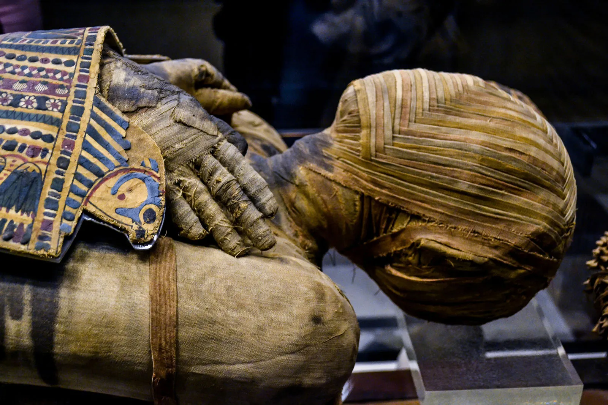

Mummification was the ancient Egyptian practice of carefully preserving a person's body so it could be used in the afterlife. The process took around 70 days and involved removing internal organs, drying the body with a salt called natron, and wrapping it tightly in linen bandages. Thousands of mummies have been discovered across Egypt, giving scientists a remarkable window into how ancient Egyptians lived and what they believed about death.